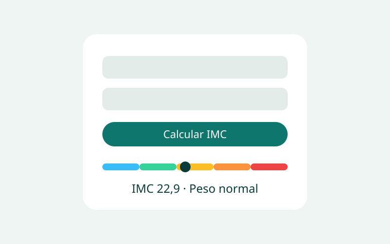
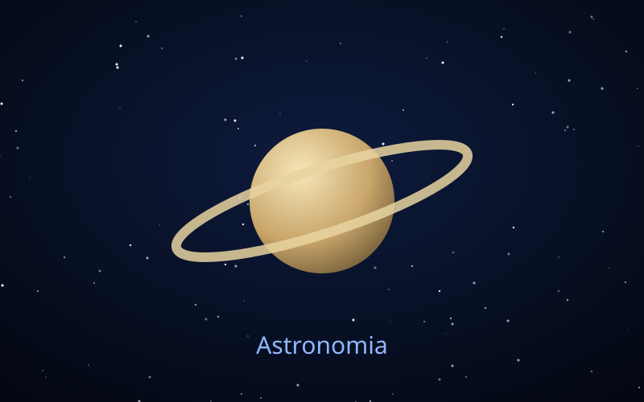
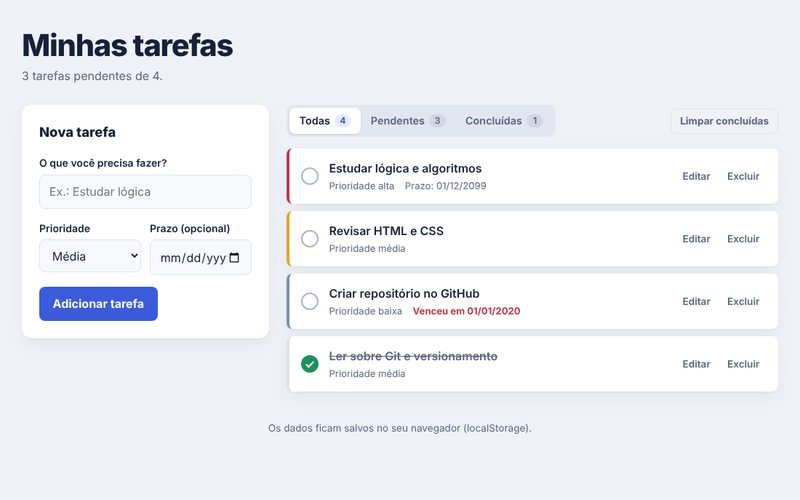
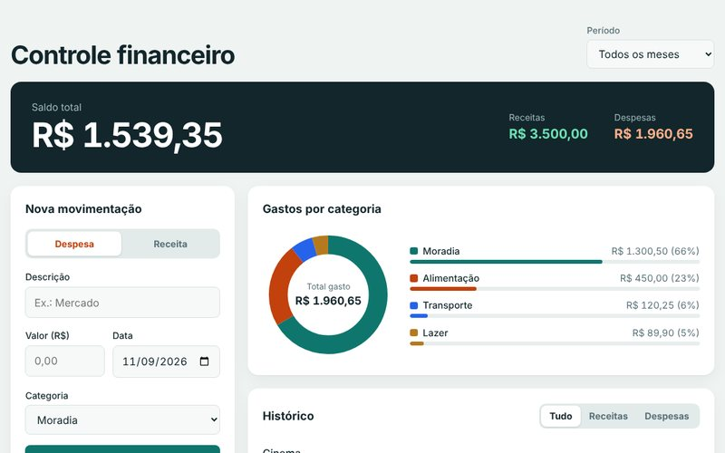
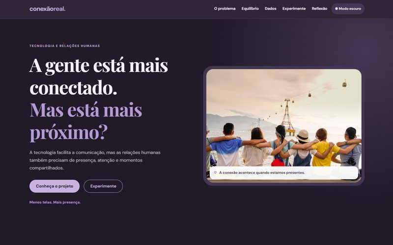
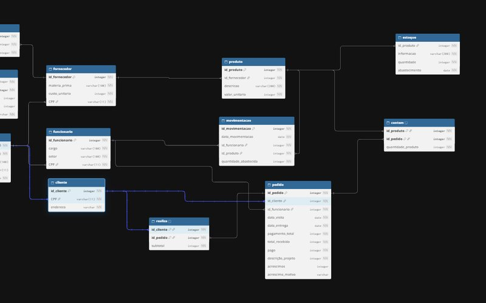

Calculadora de IMC
Calcula o Índice de Massa Corporal, valida os dados e mostra a classificação em uma escala visual.
- HTML5
- CSS3
- JavaScript
Olá, eu sou
Estudante de Engenharia de Software construindo, projeto a projeto, o caminho para uma carreira em Tecnologia da Informação.
Estou no 1º semestre de Engenharia de Software e gosto de transformar ideias em páginas e programas que funcionam de verdade. Cada exercício da faculdade é uma chance de praticar organização de código, design e lógica.
Meu objetivo é desenvolver projetos cada vez mais completos e crescer profissionalmente na área de Tecnologia da Informação.

Calcula o Índice de Massa Corporal, valida os dados e mostra a classificação em uma escala visual.

Site de cinco páginas sobre o universo e o sistema solar, com galeria, tabela de dados e formulário.

Organizador de tarefas com prioridade, prazo, filtros por status e dados salvos no navegador.

Controle financeiro pessoal com saldo automático, filtros por mês e gráfico de gastos por categoria.

Site sobre o impacto da comunicação digital nas relações, com tema claro e escuro e recursos interativos.

Levantamento de processos e requisitos e modelagem de banco de dados para uma empresa de pisos e decoração.
Engenharia de Software
UNICID · Graduação em andamento · 1º semestre
Disciplinas iniciais de lógica, desenvolvimento web e fundamentos de computação.
Quer conversar sobre projetos ou oportunidades? Me escreva ou veja meu código.